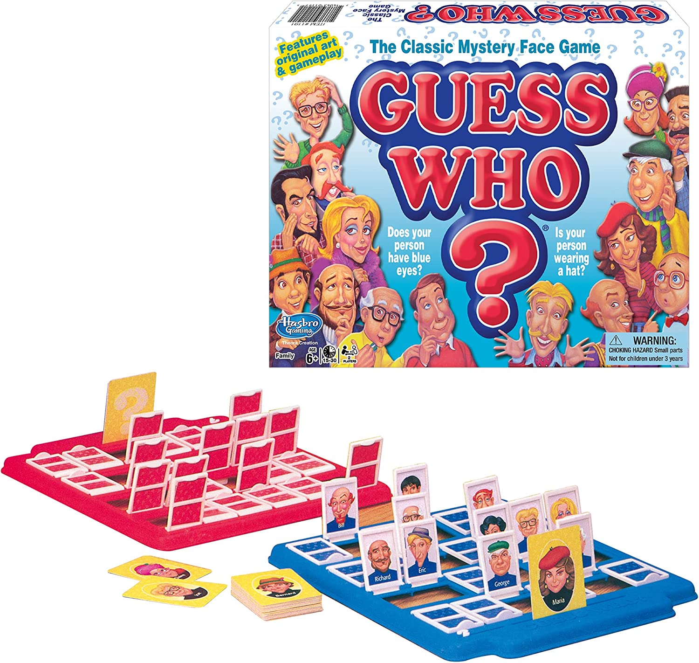

GUESS WHO?
This website is all about a populer non-electronic childhood game that most people still play and the game is call Guess Who?
"Which one?" one of the biggest game manufacturers in the world, Hasbro, is the owner. Milton Bradley was permanently merged into Hasbro in 1984 when the former business was acquired by the latter.
Important part of this game is founding different features between 24 different person, suchh as their looks, what their wearing, the colour their wearing and more.
There are several variations of Guess who? from traditional versions to special editions including figures from Star Wars, Marvel Comics, Disney, and other popular franchises. Different versions emphasising women's empowerment and restoring racial pride are also for sale to support ethnic and gender diversity.
Guess Who? In terms of board games, it's still rather new. This game is continually being developed and adjusted to the shifting social cues. Regardless of the game's popularity, criticism, or success, it is undeniable that it imparts valuable lessons to kids, including the value of social contact, observation, and reasoning.
The history of Guess Who? takes place in a universe where board games have existed for countless years. It's still being written, and it's evolving and adjusting as the game does. If it can grow to be as popular as other well-known board games, only time will tell.